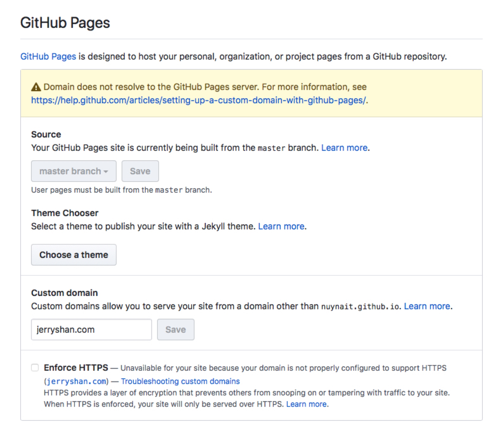
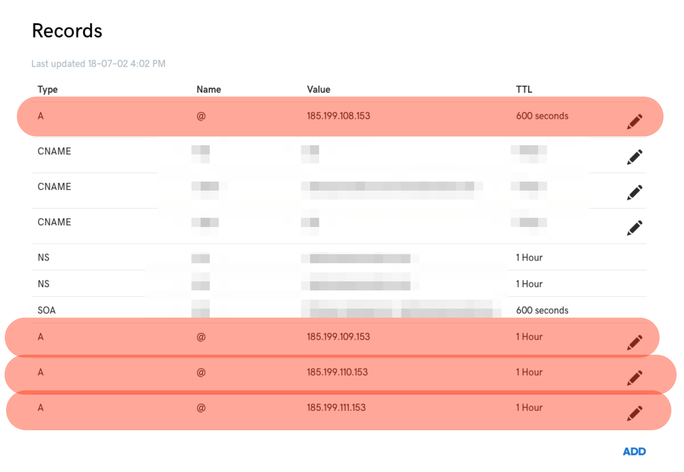

Github IO Pages Custom Domain
When I start to setup the blog, I use hexo with pure markdown file and host them using free GitHub.io services. Now I need to use my custom domain name under GitHub.io pages.
Change Repository Settings
The first thing is to change the repository settings and add my custom domain names there.

Change Domain DNS Records
Now go to the domain admin panel and edit the DNS records. Here is a list of tutorial from GitHub.
- If setting up an apex domain such as jerryshan.com, see this tutorial.
- If setting up a www subdomain such as www.jerryshan.com, see this tutorial.
- If setting up an apex domain and www subdomain such as jerryshan.com and www.jerryshan.com, see this tutorial.
- If setting up a custom subdomain such as blog.jerryshan.com, see this tutorial.
Root
If you are using a root url as custom domain, for example: jerryshan.com and www.jerryshan.com, you need to add following dns A records pointing to following server (ip).
1 | 185.199.108.153 |
You will need to create 4 type A records. The host (Name) will be @, and it points to (Value) each of these IP address. Here is a screenshot for my blog setting.

After this and assume you have update repository setting to pointing to your custom domain, you will be able to visit using your custom domain.
To verify updates succeed, you can using the following terminal command. (Replace my url to yours)
1 | dig +noall +answer jerryshan.com |
You will see a result like this:
1 | jerryshan.com. 599 IN A 185.199.108.153 |
Subdomain
For subdomain for example: blog.jerryshan.com, a CNAME record is enough. Create a CNAME record that points to your github.io own domain. For example, mine is nuynait.github.io.
After this and assume you have update repository setting to pointing to your custom domain, you will be able to visit using your custom domain.
To verify updates succeed, you can using the following terminal command. (Replace my url to yours)
1 | dig blog.jerryshan.com +nostats +nocomments +nocmd |
You will see a result like this:
1 | ; <<>> DiG 9.9.7-P3 <<>> blog.jerryshan.com +nostats +nocomments +nocmd |